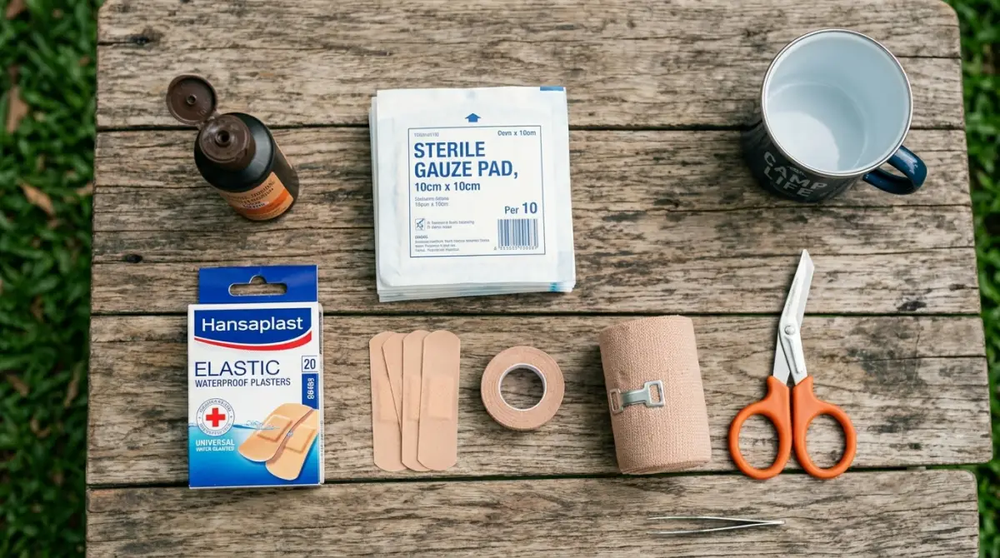

Persiapan kotak P3K wajib untuk camping agar liburan tetap aman dan menyenangkan.
Persiapan kotak P3K wajib untuk camping agar liburan tetap aman dan menyenangkan.Bayangin kamu udah ngajuin cuti jauh-jauh hari, ninggalin tumpukan revisian bos demi bisa healing ke alam. Tenda udah berdiri tegak, udara sejuk pegunungan mulai kerasa, dan api unggun udah nyala. Tapi tiba-tiba, temanmu nggak sengaja jarinya tergores pisau lipat pas lagi motong bahan makanan, atau anak mengeluh perutnya melilit parah di tengah malam.
Suasana yang tadinya asyik mendadak berubah panik karena di dalam tas cuma ada camilan, tanpa ada satupun obat-obatan dasar. Menyesal rasanya kenapa persiapan hal sesepele ini bisa terlewat, kan? Nggak ada yang mau momen liburan berharga yang udah direncanakan matang-matang hancur berantakan gara-gara kepanikan yang sebenarnya sangat bisa dicegah.
Nah, biar kamu nggak ngalamin drama nyesek kayak gitu, persiapan medis adalah SOP yang nggak bisa ditawar. Di artikel ini, aku bakal share panduan lengkap p3k wajib untuk camping yang harus banget masuk ranselmu biar pikiran tetap tenang dan liburan tetap aman.
Mengapa Persiapan Medis Sering Diremehkan padahal Sangat Krusial?
Kalau di kantor kita punya aturan K3 (Kesehatan dan Keselamatan Kerja) yang wajib dipatuhi biar nggak kecelakaan pas lagi kerja, di alam bebas pun kita butuh "K3" versi kita sendiri. Banyak pendaki pemula atau keluarga yang baru pertama kali camping saking excited-nya mikirin outfit bagus buat foto-foto, sampai lupa bawa kotak pertolongan pertama.
Alam bebas itu tempat yang indah buat melepas penat dari deadline, tapi kondisinya sangat tidak tertebak. Ranting pohon yang tajam, serangga yang nggak pernah kita temui di rumah, sampai cuaca dingin yang bikin drop, semuanya adalah faktor risiko.
Di kota, kalau kita sakit, apotek 24 jam atau klinik terdekat cuma berjarak beberapa menit naik motor. Tapi kalau kamu lagi camping di dataran tinggi, misalnya pas lagi nikmatin view kabut pagi di area Batu Sunrise Camp atau merenung di tengah hutan pinus Malang, akses ke fasilitas kesehatan profesional jelas butuh waktu tempuh yang lumayan lama.
Membawa perlengkapan medis bukan berarti kita pesimis atau mendoakan hal buruk terjadi. Ini murni soal manajemen risiko. Dari pengalamanku berkali-kali bawa rombongan keluarga dan teman untuk camping ceria, insiden kecil kayak lecet sepatu, kena percikan api unggun, atau diare itu frekuensinya lumayan tinggi.
Punya persiapan alat medis dasar menunjukkan bahwa kita adalah pejalan yang bertanggung jawab atas diri sendiri dan orang-orang di sekitar kita. Kita siap melakukan penanganan darurat pertama agar kondisi korban stabil sebelum dibawa turun ke klinik terdekat jika memang kondisinya memburuk.
Daftar Lengkap P3K Wajib untuk Camping yang Aman
Biar kamu nggak bingung harus mulai packing dari mana, aku udah buatin daftar periksa (checklist) yang terbagi dalam beberapa kategori. Jangan asal masukin semua isi kotak obat di rumah, ya. Pilih yang paling compact dan fungsional. Berikut adalah daftar P3K wajib untuk camping:
1. Alat Pembalut Luka dan Antiseptik Dasar
Ini adalah garda terdepan buat ngadepin insiden fisik ringan. Luka gores atau lecet adalah "makanan sehari-hari" saat beraktivitas di alam terbuka.
- Cairan Antiseptik (Povidone Iodine): Ini wajib ada. Betadine atau sejenisnya sangat ampuh membunuh kuman pada luka terbuka biar nggak infeksi. Alam bebas itu banyak debu dan tanah, jadi luka sekecil apa pun harus steril.
- Kain Kassa Steril dan Plester Rol: Kassa fungsinya untuk menutup luka yang agak lebar. Jangan pakai kapas untuk luka terbuka karena serabutnya bisa menempel dan bikin infeksi. Gunakan plester rol (seperti Micropore) untuk merekatkan kassa.
- Plester Luka Instan (Hansaplast dkk): Bawa beberapa lembar dengan berbagai ukuran. Sangat praktis buat luka sayat kecil di jari.
- Perban Elastis (Elastic Bandage): Jalanan di area camping yang kadang berbatu atau berakar bikin risiko terkilir jadi tinggi. Perban ini penting banget buat imobilisasi (menahan gerakan) pada engkel yang keseleo.
- Tisu Alkohol (Alcohol Swabs): Bukan buat ditempel ke luka, ya (perih banget nanti!). Tisu ini buat membersihkan alat-alat seperti gunting atau pinset sebelum dipakai.

Perlengkapan pembalut luka dan antiseptik dasar yang wajib ada di kotak P3K camping.2. Obat Oral untuk Keluhan Umum
Perubahan suhu ekstrem dari panasnya AC kantor ke dinginnya udara gunung bisa bikin sistem imun kaget. Pastikan obat-obatan dalam ini selalu tersedia.
- Paracetamol atau Ibuprofen: Obat pereda nyeri dan penurun panas sejuta umat. Cocok buat ngatasin pusing, demam, atau badan pegal linu setelah trekking jalan kaki bawa beban berat.
- Obat Gangguan Pencernaan (Diare & Mag): Air yang kurang bersih atau makanan yang pengolahannya kurang higienis di tempat camp sering bikin perut berontak. Bawa obat antidiare (seperti Diapet atau Imodium) dan antasida buat yang punya riwayat mag.
- Oralit: Kalau ada teman yang diare parah atau muntah-muntah, oralit adalah penyelamat biar dia nggak dehidrasi di tengah gunung.
- Obat Anti Mabuk Perjalanan: Buat kamu yang lokasi camping-nya harus ngelewatin jalanan meliuk-liuk ekstrem, minum ini sebelum berangkat sangat disarankan.
3. Krim dan Salep Penyelamat Kulit
Nyamuk hutan, semut, dan tanaman liar bisa bikin kulit iritasi parah.
- Lotion Anti Nyamuk/Serangga (Repellent): Oleskan ini terutama menjelang sore hari pas nyamuk mulai pada keluar mencari mangsa.
- Krim Hidrokortison (Salep Alergi): Kalau sudah terlanjur digigit serangga berbisa ringan atau kena ulat bulu dan rasanya gatal panas, salep ini akan meredakan bengkak dan gatalnya dengan cepat.
- Salep Luka Bakar: Pas lagi asyik bikin sosis bakar atau masak air, kadang ada aja yang tangannya kesenggol kompor portable atau panci panas. Salep luka bakar (seperti Bioplacenton) wajib masuk list.
4. Peralatan Pendukung Medis
Selain obat, alat-alat kecil ini fungsinya crucial banget buat tindakan medis darurat.
- Pinset Kecil: Berguna banget buat nyabut duri, serpihan kayu yang masuk ke kulit, atau menyingkirkan lintah.
- Gunting Medis Kecil: Buat motong kassa, plester, atau bahkan motong baju kalau lukanya ada di area yang tertutup rapat dan butuh penanganan cepat.
- Sarung Tangan Lateks: Keselamatan penolong itu nomor satu. Saat mau bersihin luka teman yang berdarah, usahakan pakai sarung tangan biar steril dan mencegah penularan penyakit.
Cara Mengemas dan Menyimpan Kotak P3K dengan Benar
Punya barangnya doang percuma kalau pas lagi keadaan panik, obatnya malah basah atau susah dicari karena nyelip di tumpukan baju kotor. Manajemen barang (packing) itu ada seninya sendiri.
Pertama, wajib hukumnya menggunakan wadah kedap air (waterproof pouch). Udara di area camping biasanya sangat lembap, apalagi kalau turun hujan. Kalau obat-obatanmu basah, fungsinya bisa rusak. Kamu bisa pakai tas kecil merah yang ada logo palangnya, lalu lapisi lagi bagian dalamnya dengan ziplock plastic.
Kedua, pisahkan antara obat dalam (tablet/kapsul) dan obat luar (salep/cairan). Beri label kecil yang jelas, terutama kalau kamu mencopot tablet dari kemasan kardusnya. Nggak mau kan salah ngasih obat mag padahal temanmu butuhnya obat pusing?
Terakhir, selalu cek tanggal kedaluwarsa (Expired Date) sebelum kamu berangkat liburan. Jadikan rutinitas mengecek P3K ini layaknya mengecek kesiapan alat presentasi sebelum meeting sama klien penting. Obat yang kedaluwarsa nggak cuma kehilangan khasiatnya, tapi juga bisa berubah jadi racun bagi tubuh.
Penutup
Pada dasarnya, berlibur di alam terbuka adalah cara kita me-reset pikiran dari keruwetan pekerjaan sehari-hari. Namun, kedamaian itu hanya bisa dinikmati kalau kita merasa aman. Persiapan membawa P3K wajib untuk camping bukanlah beban, melainkan jaminan ketenangan batin. Bayangkan perasaan lega ketika insiden kecil terjadi, dan kamu dengan sigap bisa mengatasinya karena semua peralatannya sudah siap di dalam tas.
Penyesalan selalu datang belakangan, dan biasanya harganya mahal—merusak mood, menghabiskan biaya evakuasi, atau memperparah cedera. Jadi, mulai sekarang, jangan pernah lagi berangkat camping hanya bermodalkan snack dan powerbank. Rapikan perlengkapan medismu, kemas dengan baik, dan nikmati petualangan alam bebasmu dengan penuh rasa aman dan nyaman.
FAQ